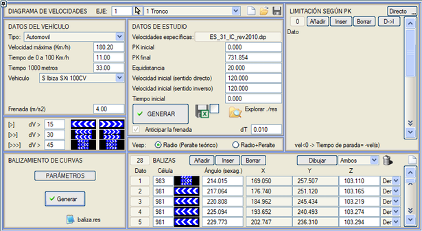

| |
|
KURP İŞARETLEMESİ (VİRAJ YÖNLENDİRME PANELLERİ)
|
Bu menü, virajlarda yönlendirme panellerinin doğru bir şekilde yerleştirilmesi için sırasıyla tek, iki ve üç panelli yönlendirme levhalarını temsil eden sembollerin (S971, S972, S973, S981, S982, S983) yerleştirilmesine yardımcı olur. Yönlendirme panellerinin kullanımı, belirli virajlara yaklaşma hızı nedeniyle oluşabilecek tehlikeye karşı sürücüyü uyarır. Belirli bir taşıt ile hız diyagramı hesaplandığında, her bir kurp için aşağıdaki bilgileri gösteren baliza.res raporu oluşturulur:

Örnek: DEMO klasöründeki Estructura_Doble.isa. Yönlendirme panellerini oluşturmak için, öncelikle Parametreler düğmesine basarak yerleşim kriterlerini yapılandırmalıyız:
Her zaman, önceki aliyman (düzlük veya daha küçük yarıçaplı bir kurp olsa bile) üzerinde ulaşılan maksimum hız ile mevcut kurptaki spesifik hız karşılaştırılır. Bu hızlar baliza.res raporunda [V önce] ve [V kurp] olarak gösterilir. Tekli, ikili veya üçlü panel uygulamak için hız farkları yapılandırılabilir:
Bir kurpta paneller arası Minimum Aralık ve Maksimum Aralık, Minimum ve Maksimum panel sayısı ile görsel Açı parametreleri arasında bir çakışma olması durumunda, her zaman minimum ve maksimum aralık önceliklidir. Bu değerleri değiştirirsek, panelleri yeniden oluşturmadan önce hız diyagramını tekrar hesaplamamız gerektiğini unutmayın. Karayollarında, eğer bir kurp her iki trafik yönü için de panel içeriyorsa, ara panellerin konumları çakıştırılır, ancak her biri kendi yönelimine sahip olur. Burada oluşturulan panel tablosu düzenlenebilir veya Çiz düğmesine basılarak harita üzerine çizilebilir. İçerdiği bilgi, BIM modelinde sanal gösterimi için kullanılabilir. Bu araç, eksen için oluşturulan son hız diyagramına ait baliza.res dosyasını başlangıç verisi olarak alır. Kurptaki panel sayısı, bu raporda belirtilenden daha az olabilir. Hız diyagramı bir otomobil ile oluşturulmalıdır, çünkü otomobiller düzlüklerde bir kamyondan veya standarttaki ağır taşıttan daha yüksek hızlara ulaşabilir. Otoyollar ve bölünmüş yollarda, paneller refüj tarafından yerleştirildiğinde (sağa kurplar) referans şerit refüj tarafındaki şerittir; paneller dış tarafa yerleştirildiğinde (sola kurplar) ise referans şerit, ilerleme yönündeki sağ şerittir. Her panel için sağ veya sol platforma ait olup olmadığı seçilebilir ve Çizim sırasında sadece sağdakileri, sadece soldakileri veya her ikisini de çizmeyi seçebiliriz. |